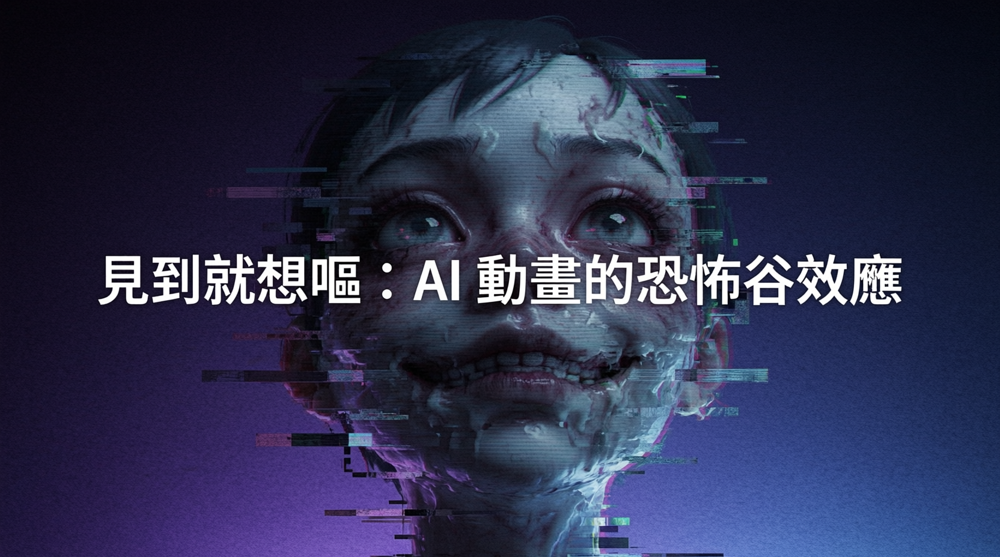

綜藝節目「動畫化」企劃以生成 AI 製作，觸發恐怖谷效應引發熱議

日本電視臺在綜藝節目中以生成 AI 製作動畫，結果因畫面不自然引發「恐怖谷」效應，視聽者在 X 上留言「見到就想嘔」，成為 AI 內容反彈的典型案例。事件亦揭示電視臺急於壓低成本與觀眾對內容質素期望之間的巨大鴻溝。
節目原本承諾以人手方式讓藝人創作角色，優勝者將獲製作真正動畫。然而 5 月 28 日播出成品時，觀眾發現動畫並非期待的手繪或 CG 風格，而是僅約一個月製作的生成 AI 成果，業界形容這是一部「問題作」。觀眾期望甚高，實際落差極大，引發激烈負評。
X 平臺上湧現大量批評留言：「AI 動畫真的令人噁心，朝早就想嘔」、「身體不舒服了」。業界分析指出，生成 AI 動畫的不自然質感觸發了「恐怖谷」（Uncanny Valley）效應——當視覺內容與熟悉事物十分相似但存在細微異常時，觀眾會本能產生不安與排斥。
日本動漫業界對生成 AI 的警惕情緒早已高漲——2025 年底，集英社、講談社、角川等主要出版社已聯合發聲，批評 OpenAI Sora 2 侵犯動漫版權。此時電視臺「明知故犯」，令反彈情緒更為強烈。
AI 生成內容與真實感差距越大，觀眾的不適感越強，畫面不自然感成關鍵失敗點。
電視臺以節省成本為動機使用 AI，但觀眾對質素的期望與 AI 現有侷限鴻溝過大。
日本主要出版社已對 OpenAI Sora 2 侵權提出批評，AI 內容在業界備受抵制。
同月稍早已有 AI 合成怪獸節目引發「看不下去」批評，電視臺屢次決策失當。
| 失敗因素 | 說明 | 觀眾反應 |
|---|---|---|
| 製作時間過短 | 僅一個月，無足夠微調 | 畫面粗糙感明顯 |
| 期望落差巨大 | 事先大肆炒作手繪動畫 | 失望情緒放大 |
| 恐怖谷效應 | AI 畫面不自然引發本能排斥 | 生理不適留言湧現 |
| 業界抵制情緒 | 動漫界正反對 AI 侵權 | 「明知故犯」標籤 |
「AI 動畫真的令人噁心，朝早就想嘔。」
— X 平臺觀眾留言日本電視臺接連因 AI 內容決策失當而受挫，顯示娛樂業在採用生成 AI 時必須更審慎評估觀眾接受度。短期內，觀眾對「AI 製作」標籤仍有強烈負面聯結；長期而言，AI 工具若要融入正規製作流程，需先證明能達到觀眾期望的最低質素門檻。